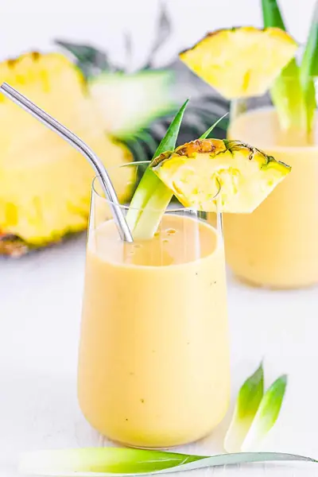

Mango Pineapple Banana Smoothie (Creamy & Healthy!)

Ingredients
- 1½ cup Frozen Mango
- 1½ Fresh Bananas (chopped (can also use frozen)
- 1½ cup Frozen Pineapple
- 2 cups Light Unsweetened Coconut Milk (or almond milk)
Steps
- Add all ingredients to a high-speed blender and blend until smooth. Pour into a serving cup and enjoy!
Recipe by Anjali Shah · The Picky Eater, from The Picky Eater. Saved here for personal use; the original has the full notes, tips and photos. Open original